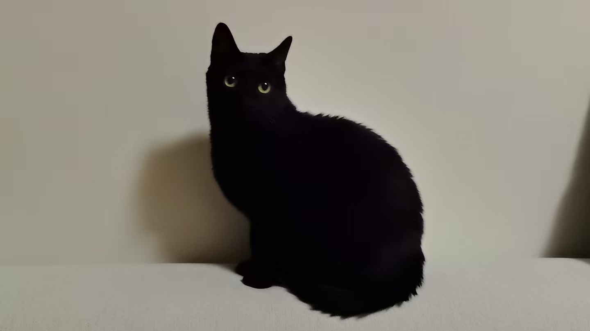
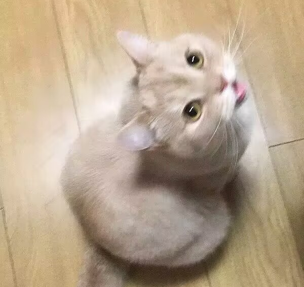

About
😊Hi, I'm a master student in Robotics at University of Minnesota, Twin Cities. I'm a research assistant in the Minnesota NLP group and the Visual Intelligence Lab, advised by Prof. Dongyeop Kang and Prof. Qianwen Wang.
💻My current research interest is Human-Computer Interaction(HCI).
🤔Specifically, I am interested in:
- Visualization: Making things explainable: what you see is what you get.
- Human-Computer Collaboration: Studying how people interact with technology to reveal fundamental aspects of human cognition, enabling the development of AI systems that better understand and respond to human needs.
- Social Computing: Understanding how technology shapes collective human behavior and designing systems that foster collaboration and shared intelligence.
News
🎇(05/2026)My first publication! Principle-Centric Benchmark is accepted to ACL 2026 Workshop!
Publications
From Rubrics to Recipe: Principle-Centric Benchmark for Evaluating Large Language Models
Shirley Anugrah Hayati, Ruizi Wang, Dongyeop Kang
ACL 2026 Workshop on Evaluation in Practice: Methodological Rigor, Sociotechnical Perspectives, &
Community Collaboration (EvalEval)
Service
❤️I dedicate time to volunteer translation work outside academia, facilitating cross-cultural communication for non-profit initiatives.
🥼Our translation group is now working on a unique series - Therapist Plays Disco Elysium. Explore our work if you're interested in psychological interpretations of Disco Elysium, a critically acclaimed game exploring trauma and human consciousness through surreal detective noir(English with Chinese).
🎮Here's my translation work about video games(English to Chinese).
📖I'm currently studying Japanese and have passed the JLPT N4 level!
🎨Still trying to draw at least.
Life
🎁My new year present! I spend most of my other time playing video games. I've
been waiting for the
release of Silksong for 4 years.
😭Unfortunately I didn't get any offer this cycle. You can check here to have an overview about admission decision timelines. I will apply again anyway!
💊The website's icon is False PHD from The Binding of Isaac, want to change it to PHD if possible...
Supporters
🐱Special thanks to my furry babies for their tremendous support! My degree belongs to them too.
😸You can check more cats here!

Avogadro阿伏
A graduate student at the National Cat University, majoring in Human-Cat Relationship Studies and Social Relations.

Reinhardt胖胖
Actually never went to school. Unfortunately, can only demonstrate intelligence when snacks are involved.